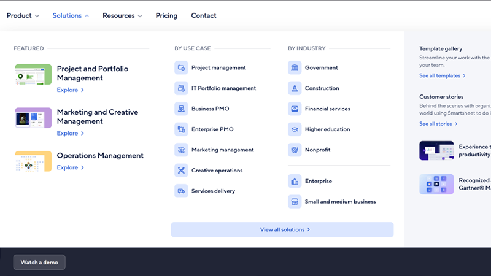

Challenge
When examining our Lighthouse speed scores for the site and investigating in the Network tab, I noticed a puzzling trend: we had responsive image modules and image compression enabled on the site, but image file sizes were still much larger than I’d expect, especially on mobile.
Due to my research and advocacy for improvements, I was able to get the business to prioritize a mulit-phase project, where we took several steps to improve page performance through optimization of media. Over time, we sought to address the following three challenges:
- Images on the site are rendering at far larger sizes than expected.
- PNG is not the optimal file format for performance.
- Increasing use of animations on the site had led to massive MP4/GIF files.
Solution
Based on the three issues above, we split the two into three phases of work:
Phase 1: Improve responsive image formats
I did extensive research on our current responsive image sizes and settings. I realized that the default values we use for the “sizes” attribute on images didn’t encourage the browser to actually pick the smaller size for mobile. I found that the “1x, 2x” values typically used for this attribute weren’t cutting it, as there was not enough information on mobile for the browser to actually choose the smaller image.
Thinking big picture, I started testing out various combinations of “srcset” and “size” values for image tags in an experimental codepen to determine values that would encourage the browser to render the smaller size file on mobile. I had to think through a variety of scenarios for file size needs (e.g. an image might be medium sized on desktop, but technically full screen width on mobile). Then, I was able to implement those configurations into Drupal into a range of responsive image size options that were integrated into our global component library.

As part of this first phase, I also noticed that our background images were skipping our responsive
image formatter entirely, due to how background images were authored and themed in the CMS. I wrote
a new PHP function in our theme to provide a range of compressed image sizes for backgrounds that
get appended as a <style> tag, so that the background is style applied like a
traditional CSS background, while actually loading a properly sized file on smaller devices.
/** _tile-molecule.scss **/
.tile-molecule {
background: var(--cardBackground)
border: 1px solid var(--border1);
box-shadow: var(--cardShadow);
border-radius: var(--cardRadius);
color: var(--cardHeadlineColor);
.content {
padding: 0 var(--md) var(--sm) var(--md);
}
svg.caret {
fill: var(--cardLinkColor);
}
.tag {
background: var(--cardTagBg);
color: var(--cardTagText);
}
}
Phase 2: Implement WebP module to reduce PNG usage
After launching the first phase, we knew that even with their newly reduced sizes, PNGs were still not optimal for performance. Further research and partnership with the SEO team confirmed that the next best step would be integrating WebP on the site.
I collaborated with our back end engineers to get the WebP Drupal module installed, which converts regular PNG files into WebP images, allowing our web authors to not have to do any extra work to improve image performance. I did a front end pass on the work, ensuring that the original PNG fallbacks (with the responsive image formats from Phase 1) still worked as expected and that there was no regression in our site’s design or performance.
Phase 3: Integrate Lottie to use SVG animations instead of MP4/GIF
After improving images, I advocated for the next phase of this work, which was to improve the performance of animating media. Due to the need to make compelling landing pages, large file size MP4s and GIFs were now everywhere on the site. If engineering forced compression of these files, they became so low quality that it was a dealbreaking issue for stakeholders.
We knew the next step was to shift to SVG-based animations. I supported the engineering and design teams in the effort to integrate Lottie as a supported media type on the site. Now, authors have begun converting pages that once had large MP4s/GIFs into pages with extremely low file size and crisp Lottie format animations.
Results
The first rounds of improving responsive image formats and shifting to WebP led to both file size improvements and SEO wins. This work reduced image file sizes by up to 97%, which resulted in a 28% increase in Google image search impressions and a 14% uptick in clicks.
While we don’t have full sitewide conversion to Lottie yet, we are seeing improvements to animation file sizes by over 94% and have launched compelling new pages that are entirely composed of performant SVG animations.
Additional projects
-
Smartsheet
Component-based Design SystemSupport the creation and lead ongoing maintenance of a component-based design system across multiple web properties. Initial migration and launch led to $1MM ARR within the first year.
Learn more ->
-
Smartsheet
Accessibility RemediationLead front end accessibility remediation, surpassing the original goal of 90%+ WCAG 2.1 AA compliance.
Learn more ->
-
Smartsheet
Global Mega-Menu NavigationArchitected an easily maintanable mega-menu navigation that increased clicks by over 30% to top-level pages.
Learn more ->
